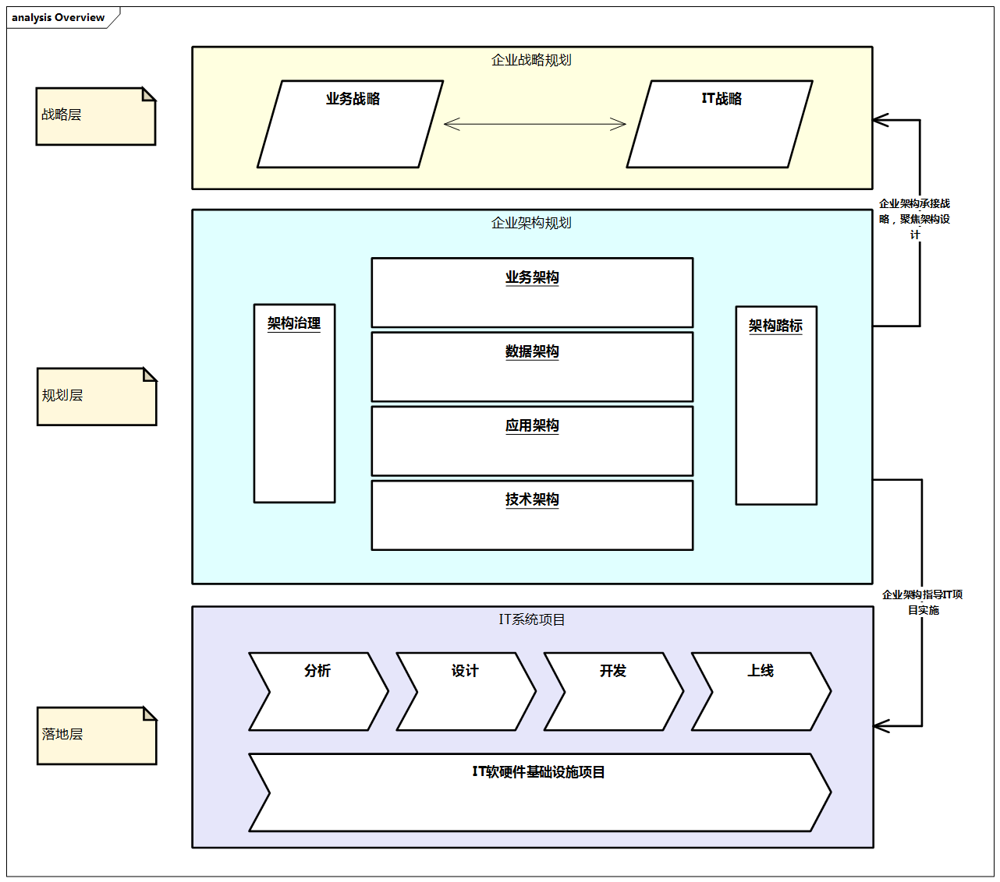

企业架构设计方法与实践
目标
主要关注于企业架构设计方法与实践（Enterprise Architecture Design Methods and Practices），希望能够整理出来一些企业架构设计方法与实践，将企业架构规划和具体落地的实践进行结合，帮助企业架构师在企业架构设计过程中，能够更好地理解企业架构设计的方法与实践，从而能够更好地完成企业架构设计工作。帮助企业架构师们从业务层面、应用层面、数据层面、技术层面及管理层面的全面构建立体化架构体系。
企业架构整体结构

图例：企业架构整体结构
企业架构整体结构从战略层、规划层、落地层这三层来分别对应企业架构中业务、架构和实施的各种重要活动和产出。